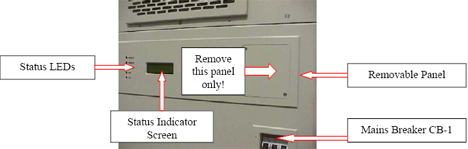
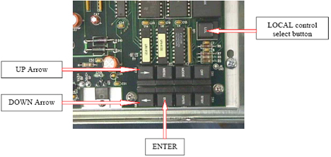

Operating Documentation
Direction 5133330-3, Rev# 14
Signa EXCITE HD 3.0T Service Methods
Module Version 1.0, Version Date 5/3/07
Operating Documentation |
| Required Persons | Preliminary Reqs | Procedure | Finalization |
|---|---|---|---|
| 1 |
The tube hours counter reset is done manually via the amplifier system controller keypad. The keypad is located on the system controller circuit board. It is accessed via the removable panel located on the front of the amplifier Status panel. The panel is shown in Illustration 1 .
Illustration 1: Keypad Cover Panel

| Last Revised: | August 8, 2006 |
| Item | Qty | Effectivity | Part# | Manufacturer | |
|---|---|---|---|---|---|
| Cross-type (Philips) screwdriver, #2 size | 1 | - | - | - | |
No general safety information.
The panel is secured with two cross-blade screws at the upper left and bottom right corners of the panel. Remove these two screws, see Illustration 2. Once the panel is removed the keypad behind it will be visible. The keypad is shown in Illustration 3.
Illustration 2: Keypad Cover Panel
Illustration 3: Keypad

Turn ON the mains circuit breaker CB-1. (Note: Mains power must be applied to the amplifier in order to reset the tube hours counter. However, the amplifier itself can be Off, in Standby, or in Operate at the discretion of the service technician.) The Off status LED should illuminate. Press the <LCL> (“local” control) button on the System Control board. A green LED within the button should illuminate. (Host computer commands will now be ignored.) The Status Indicator Screen should display Menu 1. A cursor will appear to the left of one of the four line entries.
Menu 1
=> AMP HOURS (Total accumulated Amplifier Hours)
PA TUBE (PA Tube accumulated Hours)
IPA TUBE (IPA Tube accumulated Hours)
SITE HRS (Site accumulated Hours)
Press the arrow buttons, “up” or “down” as shown in Keypad Ill to select the counter to be reset. The cursor will move accordingly as either arrow button is depressed. Once the counter has been selected (the cursor will appear to the left of the counter name, as shown in Menu 1) press the ENTER <ENT> button. The chosen reset menu, either Menu 2, Menu 3, or Menu 4, will display on the Indicator Screen.
Menu 2
ZERO PA TUBE HOURS
Menu 3
ZERO IPA TUBE HOURS
Menu 4
ZERO SITE HOURS
Press the <ENT> button to set the selected counter to zero.
If another counter is to be reset select it with the arrow buttons. Press the <ENT> button to set the selected counter to zero.
After all resets are done press the <LCL> (“local” control) button. (This releases control of the amplifier back to the host.)
Replace the panel (removed in Step 1) and reinstall the securing hardware.
The amplifier can now be restored to service.
No finalization steps.